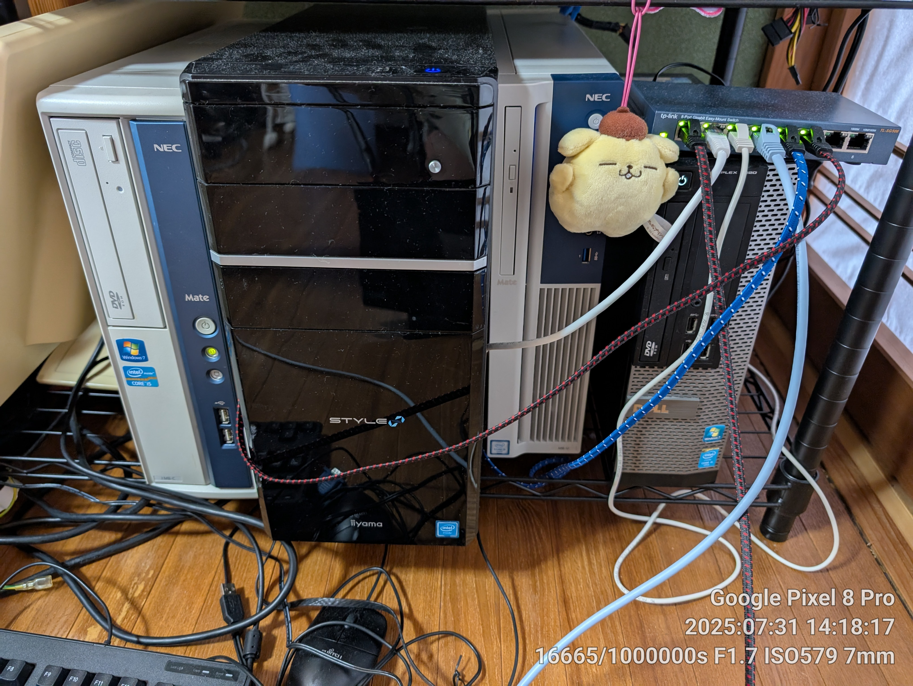
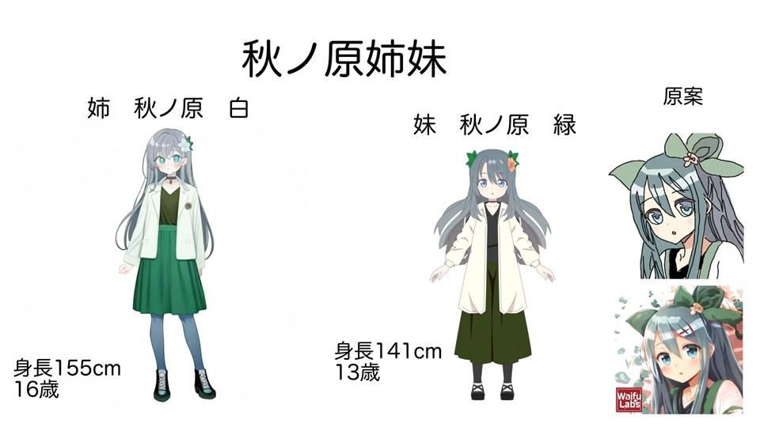

プロフィール
熊本県に住んでいるガジェットオタク。
主にパソコン(自作ジャンク問わず)、自宅鯖、スマホ集め、オーディオ、AIなどに興味がある。自分で作成したアプリをgithubにて公開中。
推しは原神のノエルと、ブルアカのアロプラ
やっているゲームはマイクラ、miside、maimai、ポラリスコード (最近はもうほとんどしてないが)
音楽はハードコアを主に聞いている。S3RL、REMZCORE、ilyhiryuなど。happy hardcore frenchcore jumpstyleが好き。
布陣情報
スマホ編
- メイン Pixel8Pro (LineageOS edition)、iPhone15Pro、zenfone11ultra
- サブ Libero5GIV
- レアなやつ vivo nex 3
タブレット
- メイン OPPO Pad 2 iPad mini 6 256gb iPad9 64gb
- サブ iPadPro12.9 1st 256gb
パソコン編
メイン (自作,2026 1/2更新)

- cpu i3 12100f
- gpu radeon RX590
- ram 28gb
- ssd 1tb
- hdd 1tb×2
- mb b660mpro rs
- wifi 6e and bluetooth
サーバー（このページをホストしている）
- 一番右はdebian環境でdiscordのボットを動かしています i5 4590 ram16gb ssd128gb
- 右から二番目はこのページをホストしています
- cpu i7 6700 ram16gb ssd256gb
- 右から三番目はNAS兼tailscaleサブネットルーター兼technitium(広告ブロック用DNS鯖)
- i5 6500 ram16gb ssd1tb+hdd1tb+hdd500gb
- 一番左は友人@mswindows888に貸しているサーバー
- キチガイ.comをホストしています
- i5 2400s ram16gb ssd256gb
- ぶら下げているポムポムプリンは鯖安定稼働のおまじない
サブ (ノート)
- chuwi freebook (n5100モデル)
オリジナルキャラクターについて
殺伐とした終末世界で生きているという設定があったりする
妹の方しか設定が固まってないがダウナー系の少女
妹メイン
リンク集
私のディスコードサーバーはこちら
加入者お待ちしております
私の他のウェブサイト
lolicon.techlolicon-finder.lolicon.techロリコンファインダー
switch.soyaakinohara.netニンテンドースイッチでホストするサイト
vrcpic.soyaakinohara.netVRC用画像ホスティングサービス